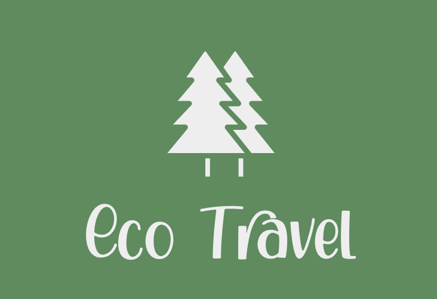
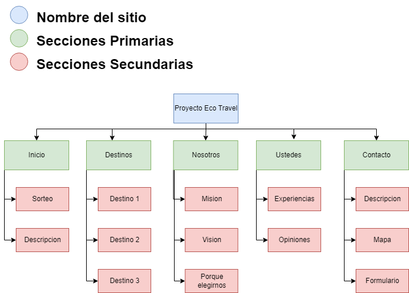

Presentacion general del proyecto
Bienvenidos a nuestra empresa EcoTravel, un rincón de la Argentina donde la sostenibilidad se fusiona con la belleza natural de nuestro país. En EcoTravel, nos enorgullece ser pioneros en la promoción del turismo sostenible en Argentina y en ofrecer reservas de estadías en nuestros eco hoteles. Trabajamos en estrecha colaboración con hoteles comprometidos con la filosofía de sostenibilidad, no solo minimizando su impacto ambiental, sino también proporcionando a los viajeros la oportunidad de contribuir activamente a la preservación del entorno. Estos eco hoteles, que abrazan la sostenibilidad en su corazón y alma, están ahora al alcance de tus manos para ser reservados directamente a través de nuestro sitio. Desde la construcción con materiales ecológicos hasta la promoción de la cultura autóctona y la conservación de la biodiversidad, cada eco hotel recomendado se esfuerza por ser un modelo a seguir en el mundo del turismo sostenible. Con nosotros, no solo explorarás la belleza de Argentina, sino que también participarás activamente en la preservación de su entorno, cultura y comunidades locales. Nuestra misión es doble: en primer lugar, empoderar a los viajeros para tomar decisiones responsables al elegir su alojamiento en Argentina, y ahora, facilitar esas decisiones a través de nuestro servicio de reservas directas en eco hoteles. En segundo lugar, nuestro compromiso se extiende a apoyar a estos eco hoteles para que puedan continuar prosperando y expandiendo sus esfuerzos sostenibles. En EcoTravel, creemos que el turismo sostenible no solo es una elección, sino una forma de vida que ahora puedes vivir con cada reserva.
Actividad principal de la empresa
Nuestra empresa se dedica principalmente a promover y resaltar eco hoteles en Argentina, ahora ofreciendo a los viajeros la capacidad de reservar directamente sus estadías a través de nuestro sitio web. Además, mantenemos un enfoque en la educación, la colaboración con comunidades locales, la investigación y desarrollo, la creación de experiencias auténticas, y el seguimiento del impacto ambiental y social positivo de nuestros eco hoteles. Estamos comprometidos en brindar a los viajeros opciones conscientes y responsables para su estadía, y a la vez, trabajar de cerca con las comunidades locales y expertos en sostenibilidad para innovar y mejorar constantemente nuestras ofertas. Juntos, estamos construyendo un futuro más verde y significativo en la industria del turismo en Argentina, donde cada reserva contribuye a la sostenibilidad y preservación de nuestro hermoso país.
Objetivos del sitio web
- Promoción de Eco Hoteles: Destacar y promover eco hoteles en Argentina. A través de nuestras opciones de reserva, brindamos a los viajeros la posibilidad de respaldar directamente estas iniciativas al elegir alojarse en hoteles comprometidos con la sostenibilidad.
- Conciencia Ambiental: Fomentar la conciencia sobre la importancia de la sostenibilidad en el turismo y cómo los viajeros pueden contribuir.
- Facilitar Reservas: Facilitar la reserva en eco hoteles, conectando a los visitantes con la capacidad de realizar reservas directas, brindando una experiencia completa y sostenible desde la investigación hasta la estadía.
Concepto general del sitio web
Nuestro sitio web será una plataforma informativa y de reserva fácil de usar, con un diseño intuitivo y atractivo. Contará con perfiles detallados de los eco hoteles, incluyendo información sobre sus prácticas sostenibles, actividades locales y comentarios de los huéspedes.
Cómo Esperamos Atraer Tráfico al Sitio Web:
- Contenido de calidad
- SEO (Optimizacion para motores de busqueda)
- Redes sociales
- Colaboraciones y alianzas
- Publicidad online
Actividad de la Institución:
Nuestra empresa se clasifica como una "Empresa de Servicios", ya que proporcionamos servicios relacionados con el turismo sostenible y la promoción de eco hoteles en Argentina.
Ejes de ODS que Aborda:
- ODS 8: Al promover el turismo sostenible, contribuimos al crecimiento económico y al empleo en las comunidades locales.
- ODS 12: Fomentamos prácticas responsables en la industria hotelera y alentamos a los viajeros a tomar decisiones de consumo conscientes.
- ODS 14: Vida submarina y ODS 15: Vida de ecosistemas terrestres Al promover la sostenibilidad, ayudamos a proteger los ecosistemas marinos y terrestres, preservando la biodiversidad.
Publico Objetivo
Nuestra propuesta web está dirigida a un público objetivo diverso pero consciente, compuesto por personas que valoran la sostenibilidad, la autenticidad y el compromiso con el medio ambiente. Aunque nuestro sitio está abierto a todas las edades, nos enfocamos principalmente en dos segmentos de audiencia:
- - Viajeros Responsables
- Edad: Principalmente entre 25 y 45 años, aunque este grupo puede variar.
- Caracteristicas: Personas comprometidas con el medio ambiente y la cultura local, interesadas en contribuir a comunidades sostenibles durante sus viajes.
- Aficiones e inquietudes: Les interesa la naturaleza, el ecoturismo, la aventura responsable y las actividades al aire libre. Tienen inquietudes sobre el cambio climático y están dispuestos a tomar medidas para combatirlo.
- Nacionalidad: Viajeros internacionales interesados en descubrir la belleza natural y cultural de Argentina.
- Poder Adquisitivo: Moderado a alto, dispuestos a pagar un precio justo por experiencias auténticas y sostenibles.
- - Empresas y Organizaciones Aficiones
- Edad: Profesionales y empresarios de diversas edades.
- Caracteristicas: Empresas del sector turístico, organizaciones no gubernamentales (ONG), agencias de viajes sostenibles, y empresas interesadas en eventos y retiros ecológicos.
- Aficiones e inquietudes: Comparten una preocupación por la sostenibilidad y están interesados en asociarse con empresas y proyectos que apoyen causas ecológicas.
- Nacionalidad: Principalmente argentinos y otras organizaciones internacionales interesadas en el turismo sostenible en Argentina.
- Poder Adquisitivo: Variable, desde pequeñas empresas hasta corporaciones con un presupuesto destinado a programas de responsabilidad social y turismo sostenible.
Este enfoque en dos segmentos clave nos permite ofrecer contenido y servicios que se ajustan a las necesidades y preocupaciones específicas de estos grupos. Además, nos permite construir una comunidad comprometida con la causa de promover prácticas turísticas responsables y sostenibles en Argentina.
Identidad visual
Logo
Dominio
ecotravel.com.ar
Eslogan
"Viaja con Conciencia, Viaja con EcoTravel"
Paleta de colores
DFD2A1
CCD49F
57884A
836B47
747373
3E3E3E
Iconos

Imagen
Nuestra imagen transmite nuestra preocupación por la educación ambiental y la importancia de cuidar el entorno. Pero más allá de la conciencia ecológica, también deseamos que perciban la majestuosidad de los paisajes argentinos y la riqueza de su cultura. Queremos que sientan que están tomando una decisión consciente al elegir alojamiento y actividades a través de EcoTravel. Nuestra firma distintiva combina la conciencia ecológica, la belleza natural y la autenticidad, inspirando a los viajeros a sumergirse en la naturaleza y la riqueza cultural de Argentina, al mismo tiempo que los alienta a cuidar y preservar estos tesoros para las generaciones futuras.
Internautas
Cuando los internautas llegan a nuestro sitio web, deberían sentir una inmediata conexión con la belleza de Argentina y su compromiso con la sostenibilidad. Deben percibirlo como un lugar donde encontrarán una amplia gama de eco hoteles, experiencias de viaje auténticas y recursos informativos sobre el turismo sostenible en Argentina. Deben pensar en nuestro sitio web como un valioso recurso para planificar sus viajes de una manera que sea respetuosa con el medio ambiente y que apoye a las comunidades locales. Deben sentir que están tomando una decisión consciente al elegir alojamiento y actividades a través de EcoTravel.
Arbol del sitio
Enlace al figma del proyecto en Github:
LINK FIGMARoles de los integrantes
- Diseñador UX/UI: Franco Quintieri
- Maquetador: Magali Catrinacio
- Programador: Lenny Ramos Hornus
- Comunador Web: Valentin Banegas